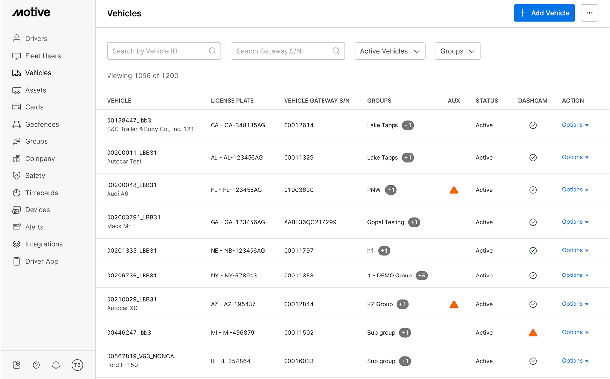
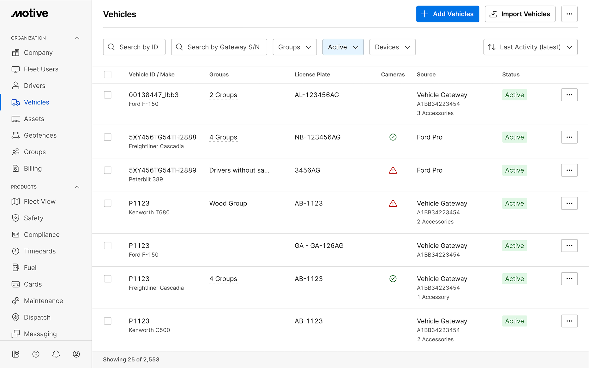
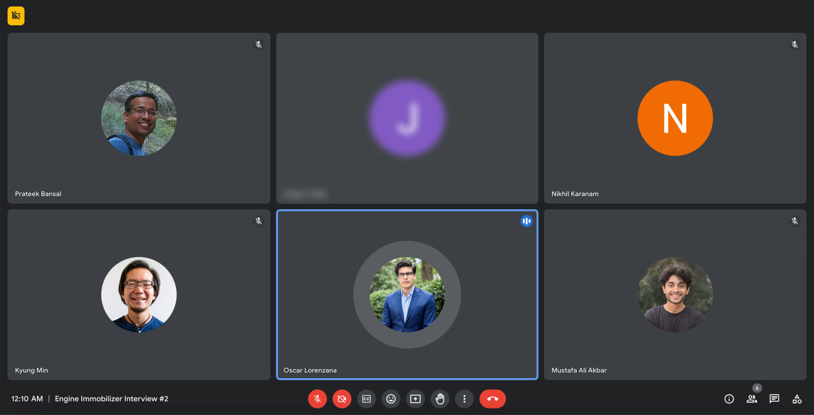
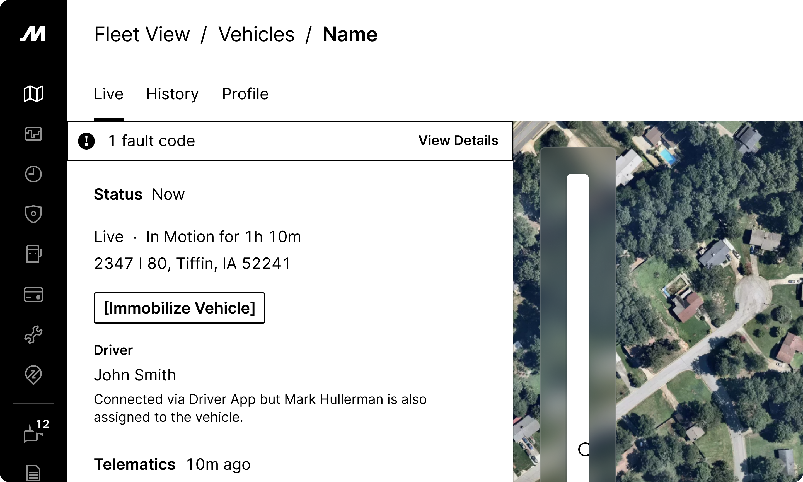
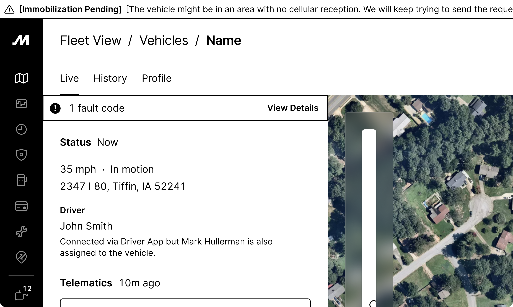

Engine Immobilizer
Remote immobilization for fleet managers responding to vehicle theft.
The problem
Engine Immobilizer became a blocker.
I joined Motive in Q3 2023, right as plans to expand into Mexico were already in motion. Sales Engineers on the ground told us that 90% of prospects wanted remote immobilization. We had already lost one significant prospect because we did not have it. This was the only core requirement missing from our product offering.
We backtracked on our priorities and had the rest of Q4 to figure it out for a Q1 2024 launch. Hardware, Tracking, and Platform all had to move together.
My role
Leading the design.
I joined the Hardware team and partnered with Product Manager Nikhil Karanam to get the product to launch. The work crossed Hardware, Tracking, and Platform, with support from content, visual, and 3D design.
Why this was hard
Major systematic updates were already in progress.
Admin was moving from 1.0 to 2.0. The Vehicles page had been designed for 2.0 but never built, while the 1.0 version kept collecting one-off additions. I had to strip the page down, rebuild its hierarchy, and add Engine Immobilizer without creating work that would be thrown away a few months later.
Fleet View’s maps, icons, and historical tracking were also changing. Device Hub was still only a plan. We could not build the hardware in-house, so Motive sourced a third-party device for the first time. Those decisions affected what data we could show, how the immobilizer paired with the Vehicle Gateway, and what happened when the signal was lost.


Customer research
The control belonged to fleet managers.
- The vehicle immobilization control belonged to the fleet manager. Drivers should not manage it except in an emergency.
- A vehicle was immobilized about five times per month, mostly after attempted robbery or drunk driving.
- The request usually began with a panic button or a call from the driver to the fleet manager.
- Thieves knew where the devices were installed and could cut the wiring.
- Dead zones made remote commands unreliable, so fleets needed a fallback.

Design decisions
We tried five placements before choosing the banner.
I tried the action bar, below the vehicle status, beside the status, a dedicated section on the left, and a banner under the tabs.
The banner would appear for less than 1% of vehicles at a time. If it was any quieter, it would be easy to miss. The first release handled starter-line immobilization. Fuel-line deceleration stayed on the roadmap for later.



Final placement: a persistent banner on the vehicle detail page.
What shipped
- Immobilized BannerA persistent banner on the vehicle detail page showing who immobilized the vehicle, when, and from where.
- Live TrackingLocation, live video, and follow mode for tracking a stolen vehicle. Immobilized vehicles appeared at the top of the fleet list.
- Trip TimelineImmobilization events appeared on the vehicle’s trip timeline beside dashcam footage, helping fleets reconstruct what happened.
- Tamper & Jammer AlertsAfter a customer call, I added alerts for physical device removal and signal jamming.
Impact
Added $8M to Motive’s ARR.
The product gave Sales the last core capability they needed for Mexico. It also lowered insurance premiums for fleets and helped reduce cargo theft. This was Motive’s first third-party hardware product and my first project at the company.